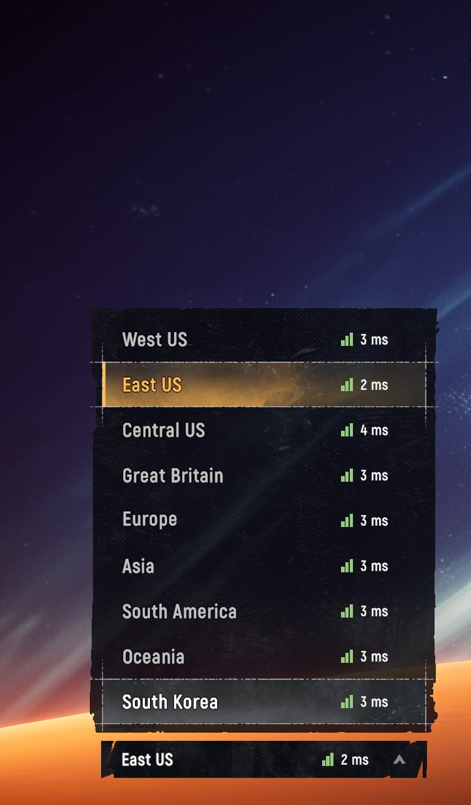
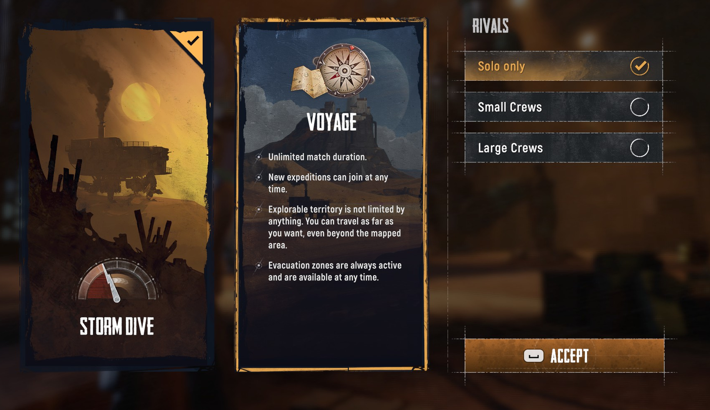
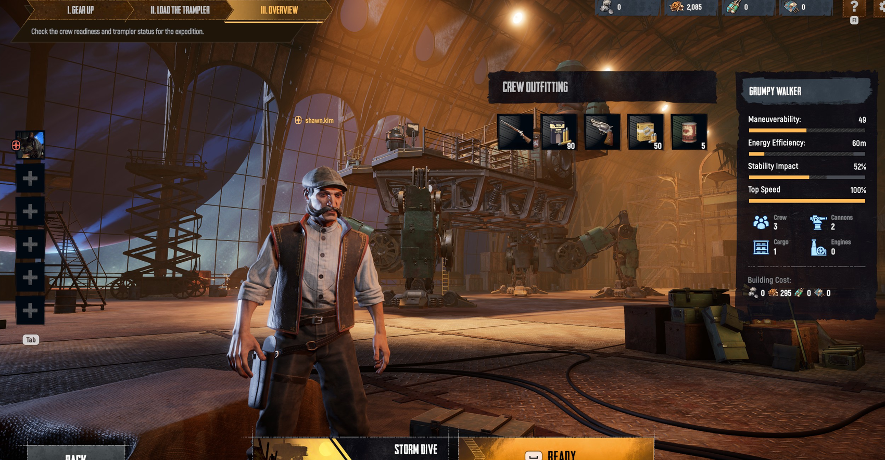

이 게임은
거대 보행 기계 트램플러(Trampler)를 직접 조립해 사막 행성 소피(Sophie)의 폐허를 약탈하고, 전리품을 들고 살아 돌아오는 솔로~6인 PvPvE 추출 슈터. 다른 플레이어와도, 폐허의 언데드 ‘우피르’와도 싸운다.
죽으면 짐을 잃는 장르다. 그래서 이기는 것보다 살아 나오는 게 먼저다.
시간에 쫓기는 모래폭풍은 Storm Dive 모드의 장치다. 입문용 Voyage 모드는 제한 시간이 없다.
시작 전에
- 온라인 전용 — 오프라인 모드 없음. South Korea 서버 있음(핑 양호).
- 공식 한국어 없음 — UI는 영어. 이 가이드는 영↔한 용어를 함께 적는다.
- 솔로는 불리 — 가능하면 크루(최대 6인)와. 혼자면 더 천천히.
- 얼리액세스 — 버그·서버 끊김이 있다. 무리 말고 일찍 추출하는 습관.
- 약 $24.99, 권장 사양 높음(RAM 32GB·RTX 3080급). 설치 시 커널 안티치트 동봉.
한글패치는 권장하지 않는다. 자동번역 패치가 돌지만 글자 깨짐이 있고, 커널 안티치트 + 항상-온라인이라 클라이언트 수정은 밴 위험이 따른다. 원본 그대로 플레이하면 위험은 없다 — 안티치트는 정상 게임 파일엔 관여하지 않는다. 영어가 부담되면 브라우저 번역과 이 가이드의 용어집으로 충분하다.
1 설치 & 첫 실행
- Steam에서 SAND: Raiders of Sophie 구매·설치.
- 실행 → 리전 선택에서 South Korea.
- 패드로 한다면 Steam Input 끄기(공식 권장).
- 막히면 F1 또는 화면의 ?로 도움말.

한 번 정하면 고정. 창고·연구(테크트리)는 그 지역에 묶인다. 계정 전체에서 공유되는 건 트램플러 설계도뿐이다.
2 무조건 Voyage 모드부터
| Voyage (항해) · 입문 | Storm Dive | |
|---|---|---|
| 제한 시간 | 없음 — 원할 때 탈출 | 있음 — 폭풍이 맵을 삼킴 |
| 탈출 지점 | 항상 활성 | 폭풍 진행에 따라 |
| 위험 | 낮음(강제 충돌 없음) | 높음(강제 PvP) |
| 전리품 | 하위~중간 | 희귀·고급 |

- 1가운데 VOYAGE 선택.
- 2혼자라면 RIVALS → Solo only — 솔로끼리 매칭돼 공평하다.
첫 목표는 단순하다. Voyage에서 정비 → 약탈 → 첫 추출을 한 바퀴 도는 것.
3 첫 트램플러 만들기
트램플러 = 이동 수단이자 기지·창고·부활 거점·전투 플랫폼. 처음엔 기성 설계도를 쓴다.
- 모선(ORBIT) → BLUEPRINTS에서 기성 설계도 선택 → Select.
- 가볍고 싼 중형으로. 느린 중장갑은 포위당한다. Grumpy Walker(≈295크라운)가 무난한 초반 기체다.
4 보급 싣고 출격
출격 준비는 상단 3단계 탭으로: GEAR UP → LOAD THE TRAMPLER → OVERVIEW → READY.

- 1상단 탭 순서로 진행.
- 2보급 슬롯 — 무기·탄약·식량·에너지 로드.
- 3우측 스탯 — 기동성·Crew·Cannons·제작비.
가져갈 것 — 통조림(부활용), 무기 2정과 전용 탄약, 대포 포탄(구경 맞춰), 에너지 로드. 게임이 알려주는 첫 솔로 권장 구성은 통조림 10·권총 2·탄약 100·포탄 40 정도다.
크루. EXPEDITION 탭에서 Invite Friends 또는 Use Invite Code로 합류(최대 6인, 같은 리전). 혼자면 DCInside sandthegame 갤러리에서 팀원을 구할 수 있다.
5 사막 도착: 정비
아무것도 켜지거나 장전된 채 시작하지 않는다. 도착 직후 직접 챙겨야 한다 — 초보가 가장 많이 막히는 곳이다.
- 통조림을 냉장고에 — 죽으면 트램플러 침대에서 부활. 없으면 부활 못 하거나 오래 기다린다.
- 에너지 로드 장전 — 리액터(배기 굴뚝 아래) 밸브에서 F. 로드 1개당 약 10~12분 주행, 신규는 5개로 시작.
- 리액터 켜기 — 같은 자리 메인 스위치에서 F 길게. 켜야 움직이고 대포도 쏜다. 켜면 검은 연기로 위치가 노출되니 약탈·정차 중엔 끈다.
- 대포 장착·장전 — 녹색 박스의 캐논 키트를 거치대에 F로 설치 → 구경 맞는 포탄을 Tab으로 옮겨 장전(40mm엔 40mm).
- 개인 무기 2정 + 탄약 — 근중거리 권총 + 장거리 소총. 맨손으로 폐허에 들어가면 죽는다.
멀티툴·쌍안경은 장비 휠에서 손에 들어야 작동한다. 키만 눌렀는데 안 되면 휠을 확인.
6 조종
운전대(Control Panel)는 조향 구획 안에 있다. 그 앞에서 F로 조타를 잡으면 움직인다. 리액터가 켜져 있어야 한다.
| 트램플러 운전 | |
|---|---|
| WS | 전진 / 후진 |
| AD | 좌 / 우 회전 |
| QE | 좌 / 우 옆걸음 |
| 도보 | |
|---|---|
| F | 상호작용(리액터·줍기·조타) |
| MB | 지도 / 쌍안경 |
| Tab | 인벤토리·상자 이송 |
| T | 멀티툴(수리) |
운전은 누르고 있지 않아도 된다. 값을 정해두면 유지되니, 조종대를 떠나 수리·전투를 병행할 수 있다.
7 약탈
- 빈 녹색 박스를 들고 다닌다. 개인 주머니는 작다. 여분은 트램플러 냉장고에, 월드 곳곳에도 있다. 박스를 든 채 집으면 박스에 담긴다.
- 작은 관심지점(POI)부터. 장비가 충분해지기 전엔 큰 섬에 무리해 들어가지 않는다.
- 잠긴 상자는 탈출 전에 열쇠로 열어야 인정된다. 열쇠만 들고 나가면 소용없다.
- 폐허엔 우피르(언데드). 트램플러엔 약하지만 도보 플레이어는 떼로 덮친다. 무기는 항상.
8 전투와 생존
약탈·정차 중엔 리액터를 끈다(연기로 위치 노출). 피격당하면 멀티툴(T)로 즉시 수리하고, 큰 손상은 리페어 키트로(쓰기 전 리액터 OFF).
욕심내지 않는다. 솔로 사망의 대부분은 이미 충분히 번 뒤 “한 곳만 더” 하다 일어난다. 핵 사용자에게 통째로 털리기도 한다. 목표를 채웠으면 미련 없이 추출.
통조림이 있으면 트램플러 침대에서 부활한다. 트램플러 자체가 파괴되면 모선으로 돌아가 다시 만든다.
9 첫 추출
전리품을 영구히 보관하는 유일한 방법.
트램플러가 부서져도 도보로 탈출할 수 있다. 단 개인 인벤토리와 손에 든 박스 1개만 챙겨진다.
여기까지 한 바퀴 돌았다면 입문 완료. 더 강한 트램플러를 설계하고, 익숙해지면 Storm Dive에 도전한다.
막히는 점
| 안 움직임 | 리액터를 안 켰거나(굴뚝 아래 F 길게) 연료 없음. 운전은 조향 구획에서. |
| 부활 안 됨 | 냉장고에 통조림이 없다. 트램플러가 파괴됐으면 모선으로 복귀. |
| 대포 안 나감 | 미장착(거치대에 F) 또는 포탄 미장전·구경 불일치. |
| 도구 안 써짐 | 장비 휠에서 손에 들었는지 확인. |
| 추출이 취소됨 | 운전 중·포격 맞음·적이 라디오 조작. 멈춰 방어하며 버틴다. |
| 전리품 사라짐 | 바닥에 둔 물건은 소실. Tab으로 선반·박스에. |
| 솔로가 너무 힘듦 | 정상이다. Voyage·Solo only로 연습, 가능하면 크루와. |
조작키 · 용어
| 조작키 | |
|---|---|
| F | 상호작용(리액터·줍기·조타·라디오) |
| WASD | 이동 / 운전 |
| QE | 옆걸음 |
| MB | 지도 / 쌍안경 |
| Tab | 인벤토리·상자 이송 |
| T | 멀티툴 |
| F1 | 도움말 |
| 용어 | |
|---|---|
| Trampler | 트램플러 — 보행 기지·전투기계 |
| Sophie | 소피 — 사막 행성 |
| Extraction | 추출 — 들고 탈출 |
| Crowns | 크라운 — 화폐 |
| Upior | 우피르 — 언데드 적 |
| Black Box | 블랙박스 — 격침 드롭, 테크 재료 |
더 깊은 자료 — 지식베이스(12개 주제 전체 데이터) · 게임 전체 개요 · 용어집